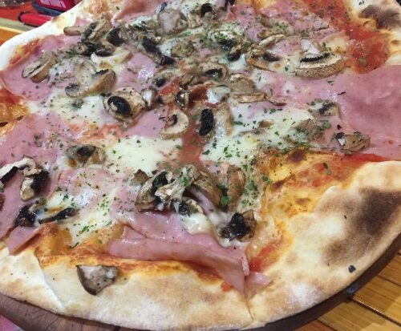

Pizza Capricciosa

Description
This easy homemade recipe is going to help you make on of the most well known pizzas in the world.
With
simple
ingredients and short preparation time, this will surely become on of your go to meals.
Ingredients
- Dough
- Olive oil
- Tomato sauce or pure
- Cheese, preferably cheddar or gouda
- Oregano
- Mozarella
- White cup Mushrooms
- Ham
Preparation
- Take an oven sized circular or square pan
- Grease the pan with the oil
- Spread the dough to the edges of the pan
- Put on the tomato sauce and spread it leaving only enough edges for the crust
- Grate the cheese on top with the grater
- Cut the ham into smaller pieces and spread over cheese
- Cut the mushrooms into thin slices and spread them over
- Sprinkle some oregano to spice
- Optional cut mozarella into small pieces and put over top
Back to top
Return to main page